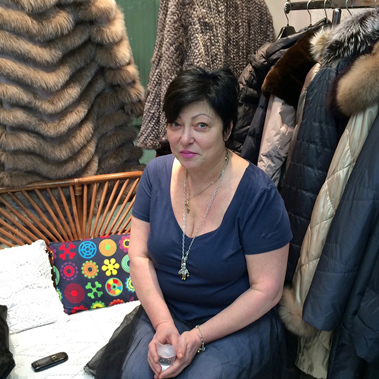
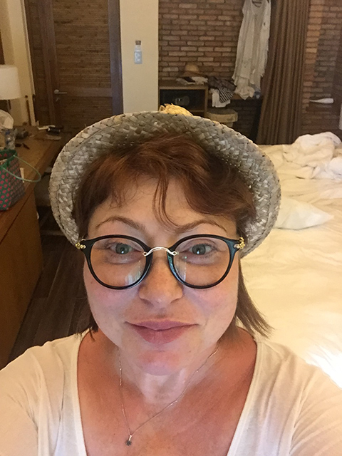

Сеть магазинов одежды в Москве
для женщин у которых все только начинается
для женщин у которых все только начинается
+7 (903) 724-12-16
Заказать обратный звонок
Сеть магазинов женской одежды «Модная штучка» и я, ее основательница Ирина Сазонова приветствуем Вас!
Я занимаюсь созданием модных образов для женщин по доступным ценам.
Наша цель – одеть модно и респектабельно всех женщин в России от 35 лет, причем по доступным ценам!
Очень хотелось, чтобы вещи были одновременно и необычные и недорого стоили
Я родилась в республике Коми, г. Воркута. В городе, с населением в 48 000 человек! Этот город всегда был очень маленький и консервативный. Даже молодым девушкам не удавалось найти хорошей, качественной одежды, не говоря уже о взрослых женщинах.
Мне всегда хотелось носить хорошую одежду, обувь и украшения. Но выбор ограничивался предложениями на местном рынке и провинциальной зарплатой молодого специалиста.
В 1993 году я приехала в Москву, сняла комнату в коммунальной квартире и арендовала место на рынке. С тех пор был пройден огромный путь от китайских платьев и рынка, до одежды дорогих брендов и торговых площадей в ЦУМе.
Общаясь с состоятельными и успешными женщинами, я впервые увидела хорошую одежду. Красивые и качественные женские платья произвели на меня неизгладимое впечатление!
Было принято решение, которое изменило все! Нужно лететь куда-то подальше от России, но только не в Турцию или Китай – выбор упал на ОАЭ
Спустя год проживания в Москве, голове стал полный порядок и четкое понимание: нашим женщинам нужно что-то необычное, удивительное, и очень редко встречающееся на других!
Очень хотелось, чтобы вещи были одновременно и необычные и недорого стоили.
Как это совместить?
Было принято решение, которое изменило все! Нужно лететь куда-то подальше от России, но только не в Турцию или Китай – выбор упал на ОАЭ (Объединённые арабские эмираты)! Это чудо страна с дешевой рабочей силой и кучей фабрик, отшивающих самые лучшие бренды на Америку, Англию, Португалию! А отсюда и цена – ниже, чем из Китая и Турции, а качество пошива Европейское, премиум класса!
Вот уже 5 лет я путешествую по всему миру, выискивая и покупая «детали» для своих коллекций
Так начался первый этап моего бизнеса: это были необычные сарафаны и платья из льна, шорты бриджи и всякие разные кофточки, и футболки к ним. Мои покупательницы были очень благодарны, ведь цена и качество не шли ни в какое сравнение с Турецким ассортиментом Московских «бутиков» тех лет!
А самое главное - это неповторимость образа!
Спустя годы, я стала работать напрямую с производителями из других стран. Это и итальянцы, с их высокой модой, и французы, это такие страны как, Нидерланды, Швеция и Швейцария!
Ко мне стали лично обращаться звезды нашей эстрады и с удовольствием покупать платья по нескольку раз в год.
Мне хотелось стать частью этого мира моды и одеть неповторимо всех женщин в России после 35 лет! Мне хотелось создавать законченные, неповторимые образы для своих покупательниц!
Вот уже 5 лет я путешествую по всему миру, выискивая и покупая «детали» для своих коллекций. В каждом нашем «завершенном» образе, вы найдете вещи из Германии, Франции, Италии, Южной Кореи, Англии и многих других стран (более 18 постоянных поставщиков по всему миру).
Каждый сезон, в наших магазинах представлено более 100 моделей одежды, различных цветов и материалов. Мы можем одеть вас с ног до головы на любое мероприятие: в театр, на выставку, на прогулку, в ресторан, на праздник, на дачу и даже в морское путешествие!
У нас 2 магазина в Москве, в которых находятся профессиональные портные и стилисты, готовые преобразить вас 7 дней в неделю! Все вещи мы подшиваем и подгоняем по фигуре, чтобы они сидели идеально!
Помогите своим друзьям и расскажите о нас!
Каждой, кто поделится этой записью, я обещаю личный разбор стилиста! К-а-ж-д-о-й!
Спасибо, что дочитали до конца! И помните. «Любая женщина может стать неотразимой!